The Pituitary Gland: Insufficiency & Overproduction
- Every pituitary patient gets asked two sets of questions: is there a mass effect (visual field defect, diplopia, headache, apoplexy) and is there a hormonal deficiency — going through the axes one at a time. Deficiency does not have to be all-or-nothing; it is frequently partial.
- A "normal" TSH means nothing in pituitary disease. TSH is an excellent screen for primary thyroid disease and unreliable for secondary. With a free T4 of 5 and a TSH of 4.11, the TSH is inappropriately normal — a healthy pituitary would have driven it sky-high. Diagnose and treat central hypothyroidism on the free T4, not the TSH.
- Treat adrenal insufficiency before hypothyroidism. Thyroid hormone raises metabolic rate and cortisol clearance; give it first to someone with no cortisol reserve and you can precipitate an adrenal crisis.
- Cushing: diagnose it first, then find the cause. Step 1 is proving hypercortisolism; step 2 is a single ACTH — suppressed = adrenal (ACTH-independent), normal or high = pituitary or ectopic (ACTH-dependent). The commonest cause overall is still exogenous steroid.
- Prolactinoma is the one pituitary tumour where medicine beats surgery. Dopamine agonists — cabergoline, bromocriptine — are first choice, even for macroadenomas. Dopamine is the brake on prolactin, so a dopamine agonist both lowers the hormone and shrinks the tumour.
- Acromegaly: screen with IGF-1, confirm with an oral glucose tolerance test (glucose should suppress GH below 1 µg/L; in acromegaly it does not), then MRI. Mean delay from first symptom to diagnosis is 12 years, because the changes are slow and the patient sees themselves every day.
Learning Objectives
- Recognise the clinical presentation of, describe the main diagnostic steps for, and globally discuss the management of anterior pituitary insufficiency.
- Recognise and describe the signs and symptoms of pituitary hormone overproduction.
- Describe the initial screening test for overproduction of each pituitary hormone.
The lecturer's own framing is worth keeping in view: the case results and cut-off levels are illustration. What is expected is that you recognise the clinical picture and can do the initial screening — as a family physician would — not that you memorise reference ranges.
The Axes, Briefly
The pituitary is not an autonomous gland. Almost everything it does is dictated from above by hypothalamic releasing and inhibiting factors delivered down the portal system, and checked from below by negative feedback from the target organ.
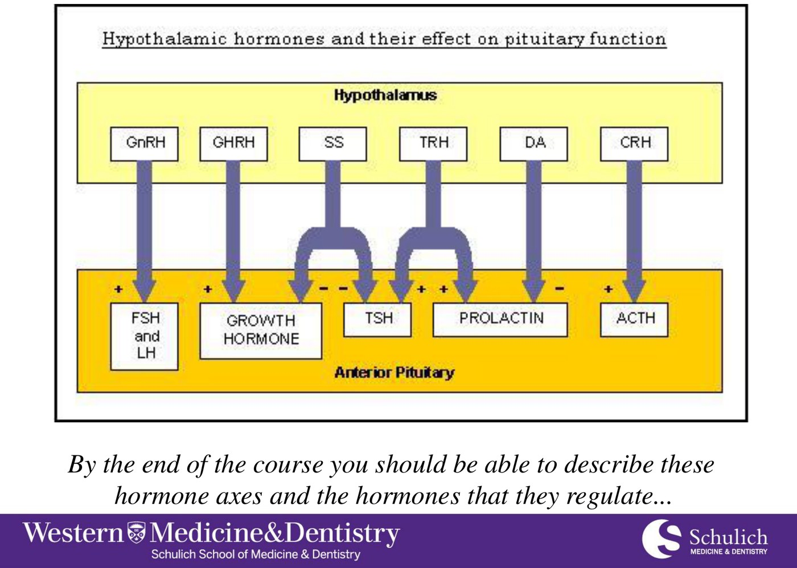
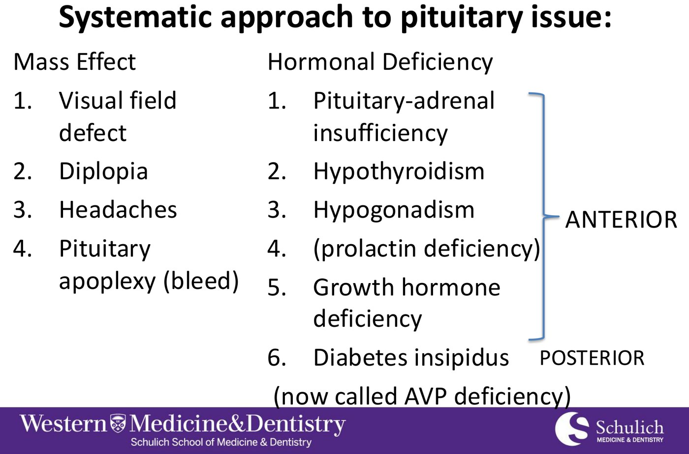
Too Little — Pituitary Hormone Insufficiency
A 53-year-old man is referred for evaluation of a pituitary mass, found on a CT ordered for headaches. The whole of Part 1 is the systematic approach to that referral.
The Case, and What to Ask
53-year-old man, pituitary mass found on CT for headaches
History: headache 6 months · blurring vision 3 weeks · 3 episodes of nausea and vomiting in the last 3 months · weight down 15 lb · cold intolerance. On direct questioning: decreased shaving, loss of libido. No medications, no alcohol, stopped smoking 6 months ago.
Examination: 59.6 kg, 174 cm, BP 116/78, HR 62. Lean, with loss of muscle mass. Visual field defect. Minimal androgenic hair, dry skin, fine freckling around the eyes.
The patient volunteered headache and blurred vision — the mass symptoms. He did not volunteer decreased shaving or loss of libido, and those are the two that establish hypogonadism. Weight loss and cold intolerance were mentioned but easy to attribute elsewhere.
This is the practical reason the lecture insists on a systematic approach: you have to go down the list of axes and ask about each one, because the endocrine symptoms are non-specific, gradual, and not what brought the patient in.
Mass Effect: The Visual Fields
The optic chiasm sits directly above the pituitary. The fibres crossing in it are the nasal retinal fibres from each eye — and the nasal retina sees the temporal field. Compress the chiasm from below and you knock out both temporal fields: bitemporal hemianopia.
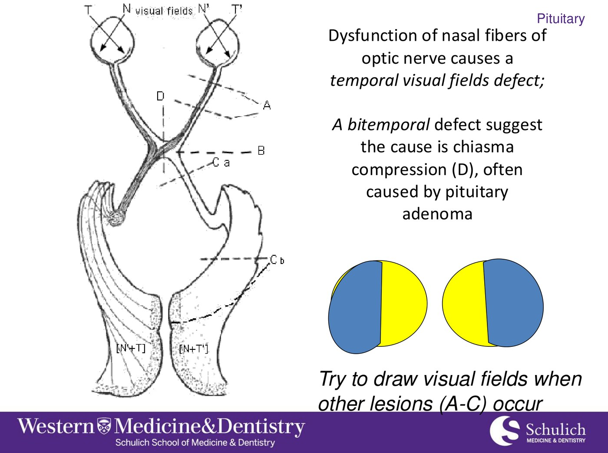
Dysfunction of the nasal fibres of the optic nerve causes a temporal field defect. A bitemporal defect points to chiasmal compression (D) — often a pituitary adenoma. Worth drawing the fields for lesions A–C yourself.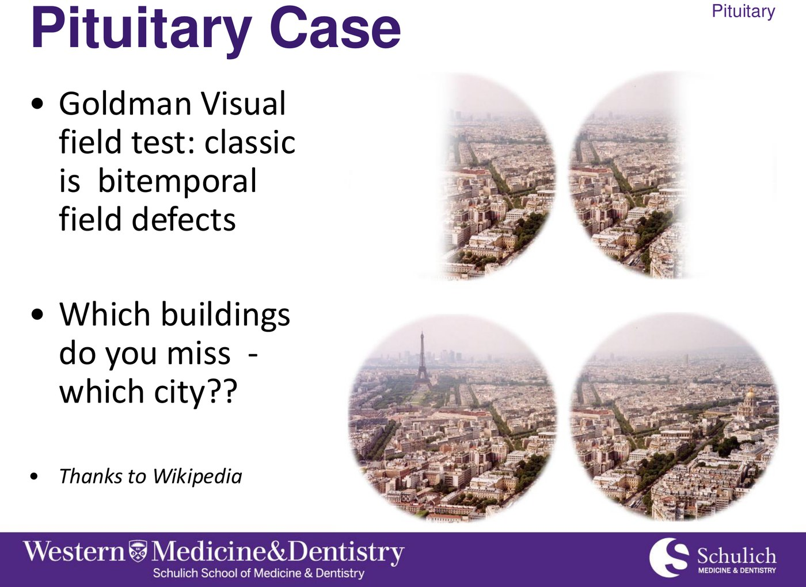
What it is actually like to have one. The full view above, the bitemporal defect below — which buildings do you miss, and which city? Patients lose the periphery on both sides and often do not notice until they walk into something.The other mass effects on the list: diplopia (lateral extension into the cavernous sinus, catching cranial nerves III, IV and VI), headaches, and pituitary apoplexy — haemorrhage into the gland, which is an emergency.
Working Through the Axes One at a Time
Assess the patient by assessing each individual pituitary–target organ axis. For each: what would the deficiency look like, and what does the axis diagram predict the labs will show?
1 — Pituitary–adrenal insufficiency
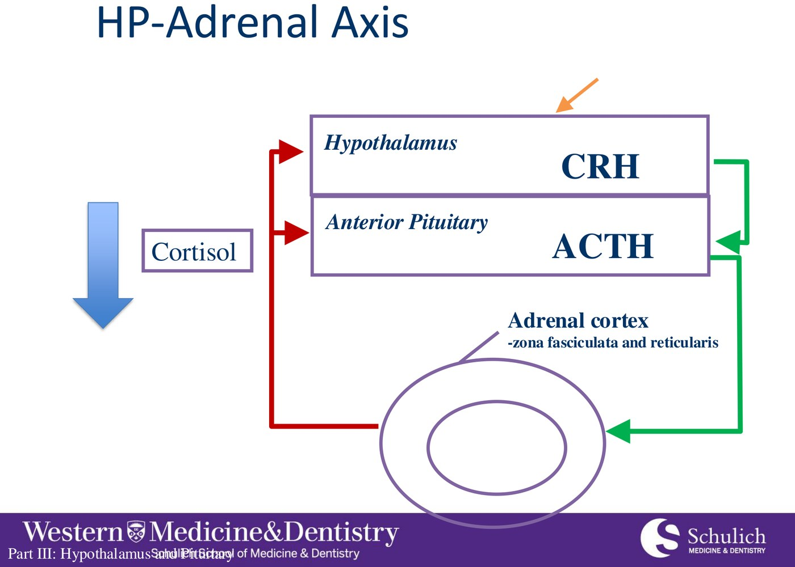
CRH → ACTH → cortisol. In a pituitary lesion, ACTH is low or inappropriately normal and cortisol is low.Symptoms: lassitude · weight loss · fatigue · anorexia · hypoglycaemia · decreased libido · hypotension.
Note what is absent compared with primary adrenal failure: no hyperpigmentation and no hyperkalemia, because ACTH is low rather than high and aldosterone is preserved. See primary vs secondary adrenal insufficiency.
2 — Pituitary–thyroid insufficiency
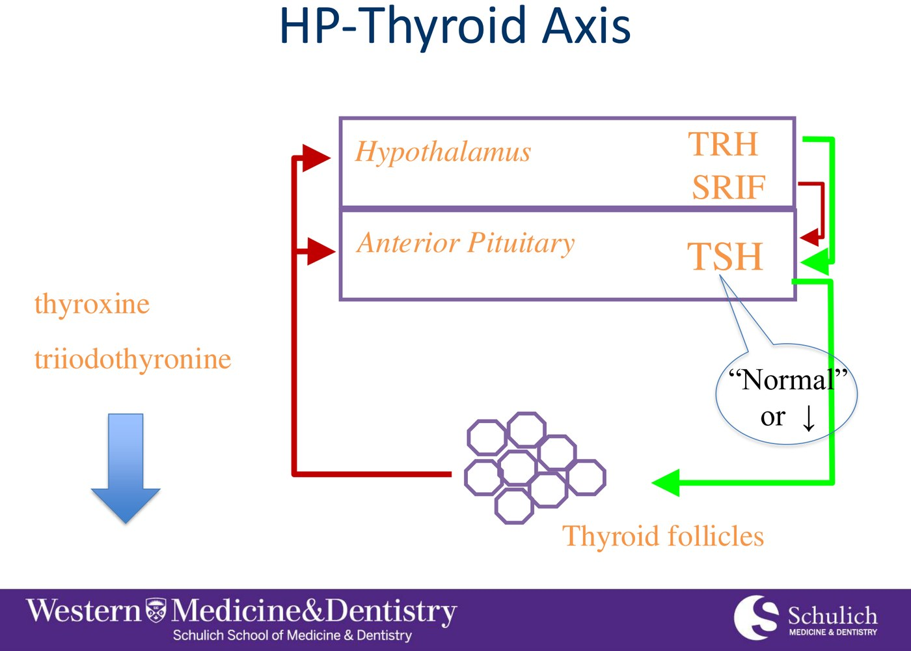
Note the label on the TSH: "normal" or ↓. That is the whole trap of central hypothyroidism, spelled out on the axis diagram.Symptoms: fatigue · cold intolerance · decreased appetite · constipation · dry skin · bradycardia.
Our patient had cold intolerance, dry skin and a heart rate of 62 — all present, all easy to dismiss individually.
3 — Pituitary–gonadal insufficiency
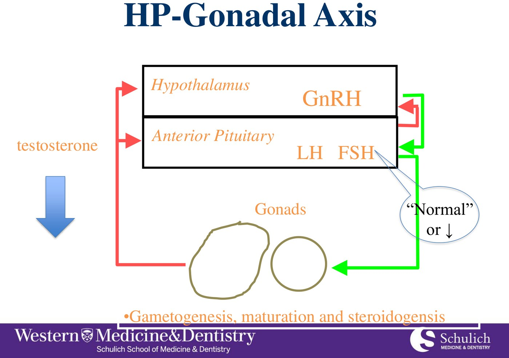
Same trap again: LH and FSH are "normal" or ↓ against a frankly low testosterone. Low sex steroid with unraised gonadotrophins is the abnormality.In men: infertility · decreased energy · decreased libido · hot flashes · decreased bone mineral density.
In women: ovarian insufficiency · irregular or absent periods · hot flashes · vaginal atrophy.
The axis itself is covered in detail in 2.6, the HPG axis.
4 — Growth hormone deficiency (adult)
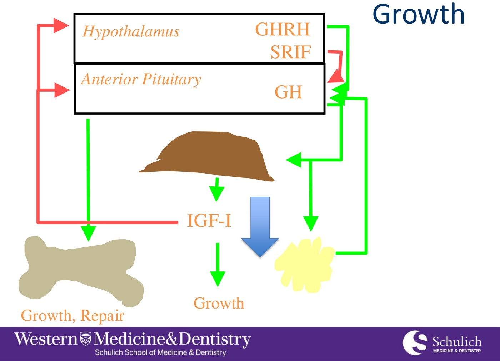
GHRH stimulates, somatostatin (SRIF) inhibits, GH acts largely through IGF-1 made in the liver. Because GH is pulsatile and IGF-1 is stable, IGF-1 is the practical measurement — which matters again in acromegaly below.Features in adults: changed body composition (increased fat mass, decreased lean mass) · decreased exercise capacity · impaired psychological function · increased mortality.
The lecture notes there is still some discussion about these effects — adult GH deficiency is the least clear-cut item on the list, which is also why its replacement is a delayed decision.
And the remaining two: prolactin deficiency (bracketed on the slide, because it is rarely clinically important outside lactation) and diabetes insipidus / AVP deficiency, which is posterior pituitary.
The Labs — and the Trap in Them
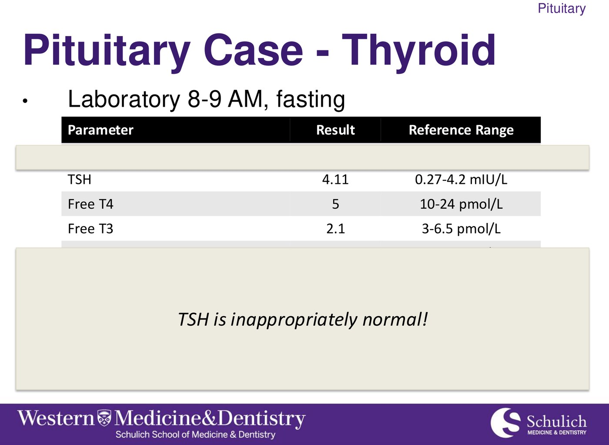
The whole panel, 8–9 AM fasting
| Parameter | Result | Reference range | Read as |
|---|---|---|---|
| Cortisol | 80 | 119–618 nmol/L | Low — adrenal axis failed |
| TSH | 4.11 | 0.27–4.2 mIU/L | Inappropriately normal |
| Free T4 | 5 | 10–24 pmol/L | Low — this is what makes the diagnosis |
| Free T3 | 2.1–3.6 | 3–6.5 pmol/L | Low or low-normal |
| LH | 1.5 | 1.5–9.0 IU/L | Bottom of range — inappropriately so |
| FSH | 2.4 | 1.0–18.0 IU/L | Inappropriately unraised |
| Testosterone | 1.2 | 9.1–55 nmol/L | Profoundly low — gonadal axis failed |
| Prolactin | 15 | 2–18 µg/L | Normal |
| Growth hormone | 0.1 | 0.01–0.61 µg/L | Uninterpretable alone — GH is pulsatile |
| IGF-1 | 79 | 115–307 µg/L | Low — the usable GH measure |
In primary hypothyroidism the thyroid is broken and the pituitary is intact. The pituitary sees the low T4 and shouts — TSH goes up. That is why TSH is such a good screening test, and why it can be used alone.
In secondary hypothyroidism the pituitary is the broken part. It cannot shout. TSH comes back low, or normal, or even mildly raised (a bioinactive form is sometimes released) — but never appropriately high. So in pituitary disease you must measure free T4, and you interpret it directly rather than through the TSH.
The same logic applies right down the panel. A gonadotrophin at the bottom of its range next to a testosterone of 1.2 is not "normal", it is inappropriate. Every axis in central disease shows the same signature: a low target hormone with an unraised trophic hormone.
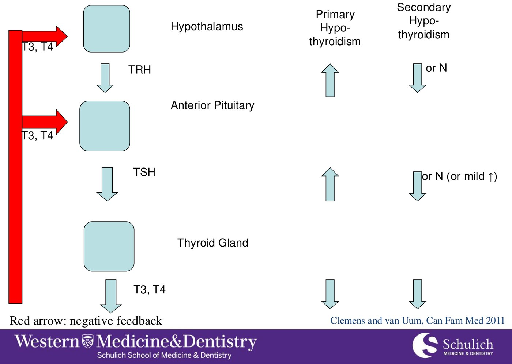
When a baseline level is not enough
| Axis | Stimulation test needed? |
|---|---|
| Cortisol | Often — insulin tolerance test, ACTH (cosyntropin) test, CRH test |
| Growth hormone | Often — insulin tolerance test, glucagon |
| Thyroid | Not required |
| Gonadal | Usually not required |
| Prolactin | Not required |
- Cortisol < 100 nmol/L confirms insufficiency; > 450 confirms sufficient function. Our patient's 80 is diagnostic without further testing.
- A "normal" baseline does not indicate an appropriate response to stress. A cortisol of 219 sits in the reference range and tells you nothing about whether this patient could survive a pneumonia — which is exactly what a stimulation test is for.
- The insulin tolerance test works by inducing hypoglycaemia: cortisol and growth hormone should both rise, and the glucose has to drop below 2.4 mmol/L for the stimulus to count. That is why it is called a stress test.
Cause, Imaging and Treatment
| Pituitary disease | Hypothalamic disease |
|---|---|
| Mass lesions · surgery/radiation · infiltrative diseases · infarction · genetic · empty sella syndrome | Mass lesions · radiation · infiltrative diseases · trauma · infections |
Not a list to know in detail — but the last item on the lecture's key points is "important not to forget to look for the cause." Replacing hormones without imaging the sella treats the consequence and ignores the lesion.
Imaging: in this patient, MRI showed a sellar/suprasellar mass elevating and compressing the optic chiasm and perhaps the proximal optic nerves; formal fields confirmed a subtle bitemporal hemianopia. MRI is superior to CT for the pituitary — the mass here was only found on CT incidentally.
Replacement
| Deficiency | Replacement |
|---|---|
| Pituitary–adrenal insufficiency | Cortisol — and the patient must be educated about stress dosing |
| Hypothyroidism | Levothyroxine — dosed and monitored on free thyroid hormone levels, not TSH |
| Hypogonadism | Testosterone — noting that testosterone itself does not restore fertility |
| Growth hormone | A delayed decision |
This is the single most dangerous ordering error in the lecture. Give levothyroxine first to a patient who also has untreated adrenal insufficiency and you can precipitate an adrenal crisis.
The mechanism: thyroid hormone raises the basal metabolic rate and accelerates the hepatic clearance of cortisol. In someone whose adrenal reserve is already gone, you have simultaneously increased the demand for cortisol and increased its disposal, against a supply that cannot rise. Hypothyroidism, by slowing everything down, had been partially protecting them.
So: glucocorticoid first, thyroid hormone second. If you are unsure whether the adrenal axis is intact and cannot wait for the result, cover with steroid and sort it out afterwards. Details of crisis management are in the adrenal lecture.
Key points
- Pituitary insufficiency can present at any age.
- It does not have to affect all hormones equally, and can be partial.
- Clinical recognition is the first step — you have to enquire about each hormone.
- Stimulation tests are often required, and deficiencies usually need treating.
- Do not forget to look for the cause.
Too Much — Cortisol (Cushing Disease)
Cushing syndrome itself was covered in the adrenal lecture. This part is about the step after the diagnosis: working out where the excess is coming from.
Recognising It, and Proving It
26-year-old respiratory therapist, referred for possible Cushing
Weight: a continuous problem from age 11; 250 lb in high school, down to 215 lb with diet and exercise, then a further gain of 10 lb after starting metformin.
Over the last year: hair growth on chin, jaw, chest and lower abdomen, now shaving daily and lasering every 4–6 weeks, with no improvement on spironolactone. Increased hunger and appetite, sweats and hot flushes, puffy face, easy bruising for 5 months, easy fatigue, muscle pain and weakness — difficulty going up stairs or standing from a chair, pink striae for a year.
Examination: puffy face, BP 140/90 supine and 150/100 standing, 104.5 kg with BMI 36, hirsutism and acne, pink and white abdominal striae, decreased contours of the proximal leg muscles, failed squatting test.
Medications: metformin, spironolactone, an oral contraceptive. Family history: diabetes; a sister and mother with hirsutism and possible PCOS.
Almost all of it could be PCOS with obesity — which is exactly what the family history invites you to think. The features that carry real weight are the ones with the high likelihood ratios: ecchymoses (LR 10–11.3), osteopenia or fracture (8–13.8), and proximal muscle weakness (8–12.6). Hypertension is 4.35–5.29; striae 2.72–2.91; hirsutism 2.21–2.90; and general obesity is 1.75–3.10 — near the bottom.
So the discriminating findings here are the easy bruising and the failed squat, not the weight. That is why the squatting test is done: it is a bedside test of proximal myopathy, and proximal myopathy is one of the few things that separates Cushing from ordinary obesity.
Spironolactone is worth noting too — it is a mineralocorticoid receptor antagonist that also blocks several other steroid hormone receptors, which is why it is used for hirsutism. Its failure here is a small piece of evidence that the androgen excess has a bigger driver behind it.
Screening: three tests, three principles
| Test | Principle |
|---|---|
| 24-hour urine cortisol | Cortisol overproduction |
| 1 mg overnight dexamethasone suppression | Lack of normal suppression of ACTH/cortisol by steroids |
| 11 PM / midnight plasma or salivary cortisol | Lack of the normal diurnal rhythm |
No test has 100% sensitivity or specificity — which is why the diagnosis rests on more than one.
- The 1 mg DST: dexamethasone suppresses ACTH and cortisol but is not picked up by the cortisol assay. 1 mg orally at 11 PM, plasma cortisol at 8–9 AM. Traditional cut-off 100 nmol/L (sensitivity 98%, specificity 89%); lower cut-offs of 50 nmol/L are now used.
- Caveats on the DST — false positives in about 30% with chronic illness, obesity, psychiatric disorders and even in normal individuals. Also: altered dexamethasone clearance (renal or hepatic failure; P450 induction by alcohol, rifampin, phenytoin, phenobarbital), and a raised cortisol-binding globulin — the birth control pill.
- 24-hour urine cortisol: > 4× ULN is Cushing syndrome; 1–4× ULN is Cushing or pseudo-Cushing; a normal result essentially excludes it (0–5% false negatives). Raised in 40% of depression and 50% of PCOS, and unreliable below a creatinine clearance of 20 mL/min.
| Test | Result | Reference |
|---|---|---|
| 24-hour urine cortisol | 5415 | 55–248 nmol/day |
| AM cortisol | 1467 | 82–952 nmol/L |
| ACTH | 46.5 | 2–12 pmol/L |
| Cortisol after 1 mg dexamethasone | 977 | < 100 (or < 50) nmol/L |
The urine cortisol is more than 20× the upper limit — far beyond the pseudo-Cushing zone. Dexamethasone suppression failed outright. And note that this patient carried three separate risk factors for a false-positive DST: obesity, possible PCOS, and the birth control pill. The magnitude of the abnormality is what makes them irrelevant here.
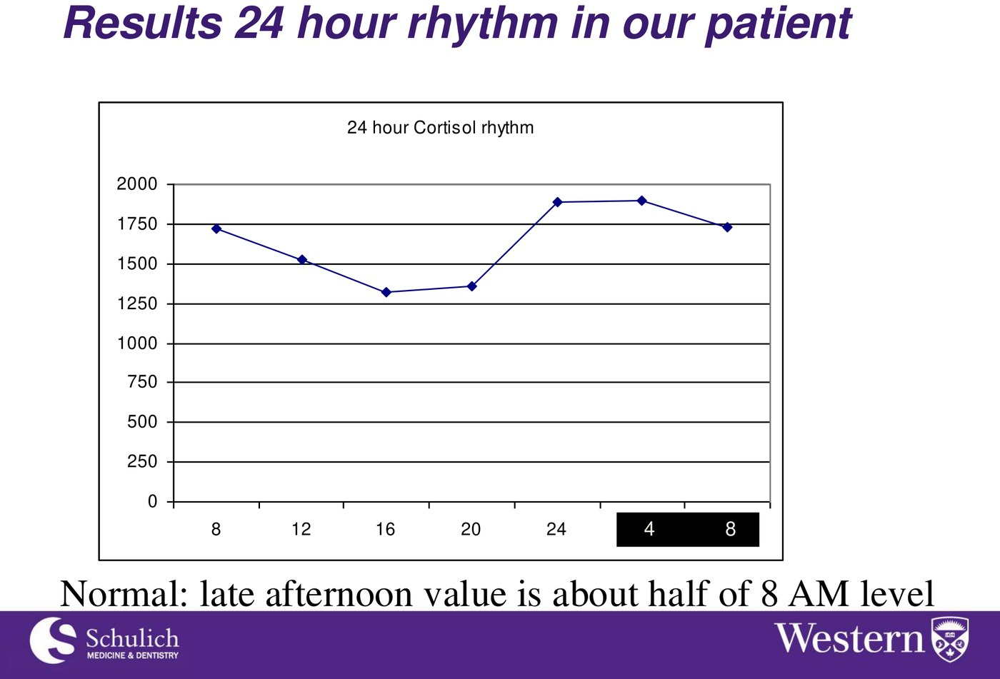
Then: Where Is It Coming From?
Step 1 is diagnosing Cushing syndrome. Step 2 is the cause — and the branch point is a single measurement.
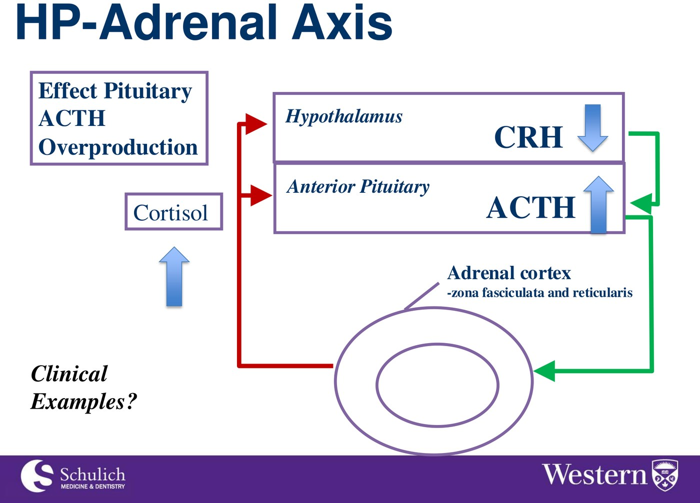
| ACTH result | Category | Causes |
|---|---|---|
| Suppressed (normal 1.9–12 pmol/L) | ACTH-independent | Adrenal — adenoma, hyperplasia, carcinoma |
| Normal or raised | ACTH-dependent | Pituitary (Cushing disease) · ectopic ACTH production · rarely ectopic CRH |
Ectopic ACTH usually produces a higher ACTH than Cushing disease does — but the ranges overlap, so the number alone does not settle it. In this patient the ACTH of 46.5 against a range of 2–12 is unambiguously ACTH-dependent.
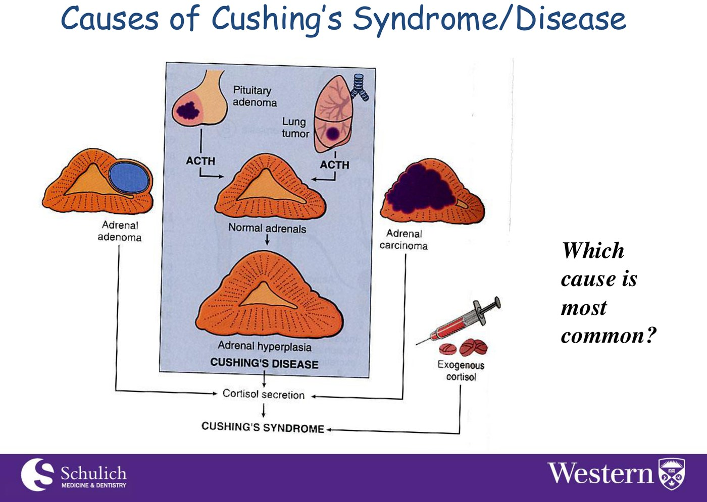
Conditions with many features of Cushing syndrome that are not Cushing syndrome — hypothesised to be driven by increased neuronal CRH production. A heterogeneous group: chronic alcoholism · alcohol withdrawal · major depression · poorly controlled diabetes · obesity.
This is the practical reason the 1–4× ULN urine cortisol band is ambiguous: pseudo-Cushing lives there. Above 4× ULN you are out of that territory.
Imaging — and why a scan alone is not proof
- In 10% of healthy people a non-functioning adenoma is present on MRI or CT. A pituitary lesion on a scan is not, by itself, the answer.
- In Cushing disease, 80–90% are microadenomas, and in 40% nothing is visible on CT or MRI at all.
- CT: sensitivity 47%, specificity 74%. MRI: sensitivity 50–60%, specificity 75–98% — and more useful to the neurosurgeon.
In this patient MRI raised suspicion of a 6 × 7 mm microadenoma on the right, possibly extending to the cavernous sinus. The conclusion drawn was measured: Cushing syndrome confirmed, ACTH-dependent, likely pituitary — with an incidentaloma not entirely excluded.
Treatment and what happened
Ketoconazole was started to reduce endogenous cortisol production while urgent transsphenoidal surgery was arranged. The tumour was far lateral, clearly visible, white and very soft, and was removed without bleeding complications. Steroids were started post-operatively — because removing the source of a long-standing cortisol excess leaves a suppressed normal axis behind, and acute glucocorticoid withdrawal is itself an adrenal crisis.
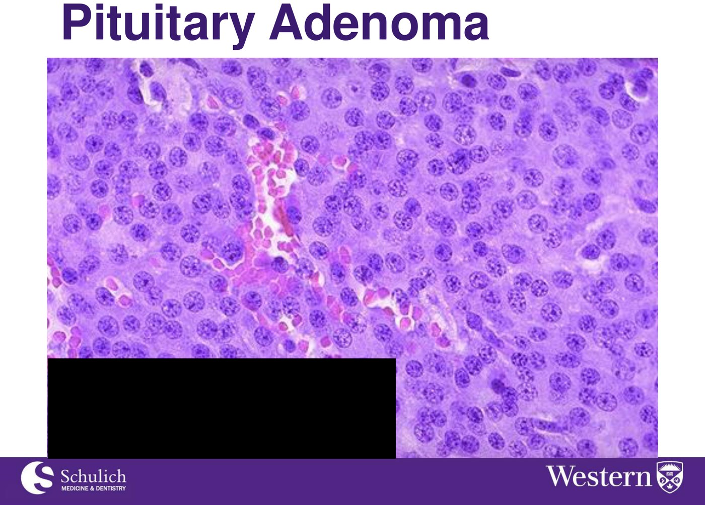
Pituitary adenoma. Increased cellularity, growth in sheets with loss of the acinar architecture, and one cell type instead of the normal mixture.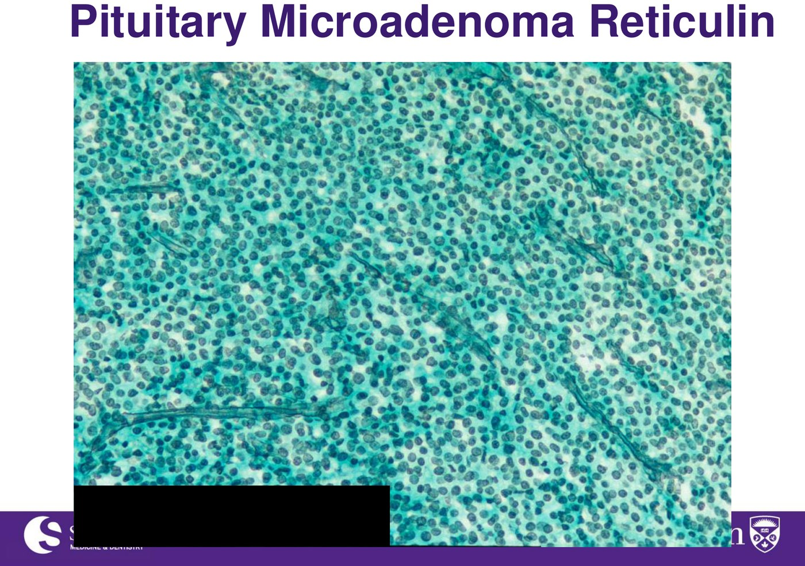
Reticulin stain. Normal pituitary has a reticulin network outlining each acinus; in an adenoma that framework is lost. This is how a microadenoma is confirmed when the H&E alone is equivocal.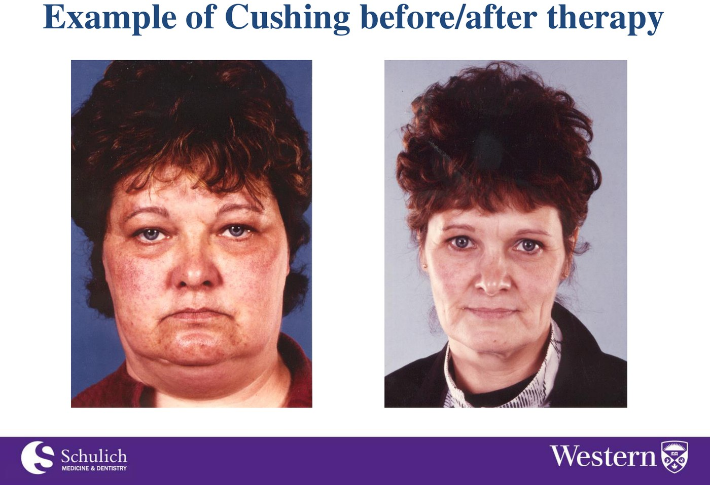
Untreated, 5-year survival is under 50% — from cardiovascular complications (especially hypertension), thromboembolic disease and infection. This is not a cosmetic disease.
Treated: symptoms disappear over 2–18 months, including the osteoporosis. But hypertension and impaired glucose tolerance may persist, and there is a 20% recurrence rate after successful initial treatment — roughly 1% per year, which is why follow-up does not stop. Depression often lifts spontaneously or becomes far easier to treat.
One rare relative worth knowing exists: TSH-producing adenomas. Very rare; present with hyperthyroid symptoms; the lab shows a high-normal or elevated TSH with elevated free T4 and free T3 — the mirror image of the "inappropriately normal" trap in Part 1. Treated with surgery or a somatostatin receptor blocker.
Too Much — Prolactin
The commonest functioning pituitary tumour, and the only one where the first-line treatment is a tablet rather than an operation.
Prolactin: The Hormone Held Down, Not Driven Up
- Made by lactotroph cells, distributed throughout the pars distalis of the pituitary.
- Normal < 25 µg/L in adults, and usually < 15 in men.
- Dopamine stimulates the D2 receptor → inhibits adenylyl cyclase → inhibits prolactin synthesis and secretion. The default state of a lactotroph is to secrete; the hypothalamus spends its time suppressing it.
- TRH stimulates prolactin release, and prolactin acts on the breast to increase secretory cell differentiation and milk production.
- Lactotroph hyperplasia occurs in pregnancy, with estrogen treatment (estrogen drives PRL gene expression), in some cases of Cushing disease, and in primary hypothyroidism.
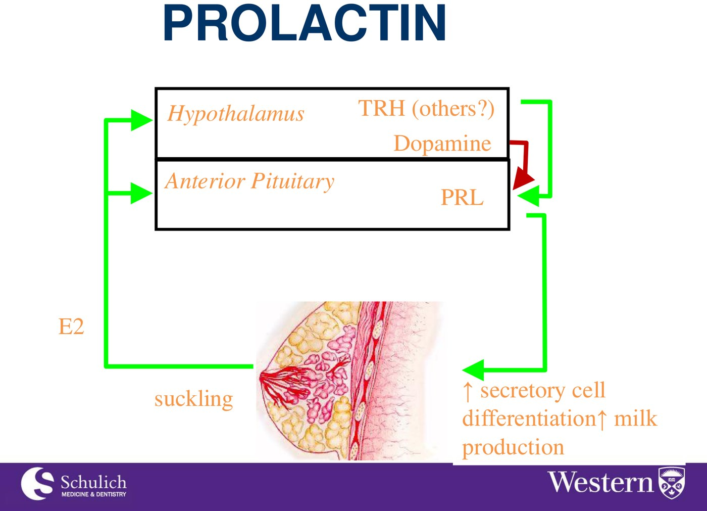
Stalk section raises prolactin while lowering everything else. Cut or compress the pituitary stalk and every releasing hormone fails to arrive — so LH, FSH, TSH, ACTH and GH all fall. But dopamine also fails to arrive, and dopamine was the brake, so prolactin rises. A modestly raised prolactin alongside multiple deficiencies points at the stalk, not at a prolactinoma.
Primary hypothyroidism raises prolactin, because the low T4 drives TRH up — and TRH stimulates lactotrophs as well as thyrotrophs. Which is why a TSH belongs in the work-up of any raised prolactin: treating the thyroid may fix the prolactin.
Prolactinomas and What They Do
- Most common in women, peaking in the childbearing years.
- In women, 95% are microadenomas (< 10 mm).
- Macroadenomas (> 10 mm) are more frequent in men — and those are the ones large enough to reach the optic chiasm.
In both sexes: visual disturbance and headache, plus problems from the decrease of other pituitary hormones as the tumour compresses the rest of the gland.
In premenopausal women
| Feature | Detail |
|---|---|
| Hypogonadism | Oligomenorrhea or amenorrhea |
| Galactorrhea | 30–70% |
| Infertility | A frequent presenting complaint |
Amenorrhea is the absence of menstrual periods. It is primary when menarche has never occurred — conventionally by age 15, or by 13 with no secondary sexual characteristics — and secondary when periods stop in someone who was previously menstruating, defined as no period for at least 3 months if cycles had been regular, or 6 months if they were irregular. Hyperprolactinemia causes the secondary form.
Oligomenorrhea is the milder version: infrequent periods — cycles longer than about 35 days, or fewer than nine periods a year. Prolactin produces oligomenorrhea before it produces amenorrhea, which is why the degree of elevation tracks the severity of the menstrual disturbance.
How useful is prolactin as a test in these presentations? Of patients with amenorrhea, 10–20% have hyperprolactinemia once pregnancy is excluded. Of women with nipple discharge, 14% — and 20% of those have a pituitary tumour.
The mechanism, and why the level matters
Prolactin inhibits GnRH → which inhibits LH (and possibly FSH) → so the gonad is never told to make sex steroid. The lab signature is no rise in LH/FSH alongside a low or falling estradiol — that is, secondary hypogonadism, exactly the pattern from Part 1.
| Prolactin (µg/L) | Consequence |
|---|---|
| < 20 | Normal |
| 20–50 | Decreased progesterone only → a short luteal phase — often presenting as difficulty conceiving with apparently normal periods |
| 50–100 | Amenorrhea or oligomenorrhea |
| > 100 | Overt hypogonadism — estradiol frankly low, symptomatic |
A graded suppression, not an on/off switch: the higher the prolactin, the further down the axis it shuts things off.
In men
Decreased libido · erectile dysfunction · infertility (4% of men with infertility) · gynaecomastia · galactorrhea (rare) · osteopenia in 16 of 20 (80%). Same lab signature: no rise in LH/FSH with a low or low-normal testosterone.
Men present later and with bigger tumours, and the reason is in the symptom list: there is no menstrual cycle to stop. Loss of libido gets attributed to age or stress, so the tumour is often found only once it causes headache or visual loss — which is why macroadenomas predominate in men.
Causes, and Reading the Number
| Physiologic | Pathologic | Other |
|---|---|---|
| Stress · pregnancy · nipple stimulation · macroprolactinemia ("big prolactin") | Lactotroph adenoma · decreased dopaminergic inhibition · tumours or infiltrative disease of the hypothalamus (sarcoidosis) · section of the pituitary stalk (head trauma or surgery) · drug use | Idiopathic · estrogen/pregnancy · hypothyroidism · chest wall injury · chronic renal failure |
By anatomical location, the lecture's other cut of the same list:
- Hypothalamic disease — tumour, infiltrative disease, cranial radiation.
- Pituitary disease — prolactinoma (including as part of MEN1), acromegaly, pituitary stalk section, other tumours, infiltrative disease, intrasellar germinoma.
- Drugs — dopamine-receptor antagonists above all: chlorpromazine, haloperidol, metoclopramide, domperidone. Also methyldopa, verapamil, estrogens, cimetidine.
- Others — primary hypothyroidism, chronic renal failure, cirrhosis, stress. Plus macroprolactin, which is a laboratory artefact rather than a clinical problem.
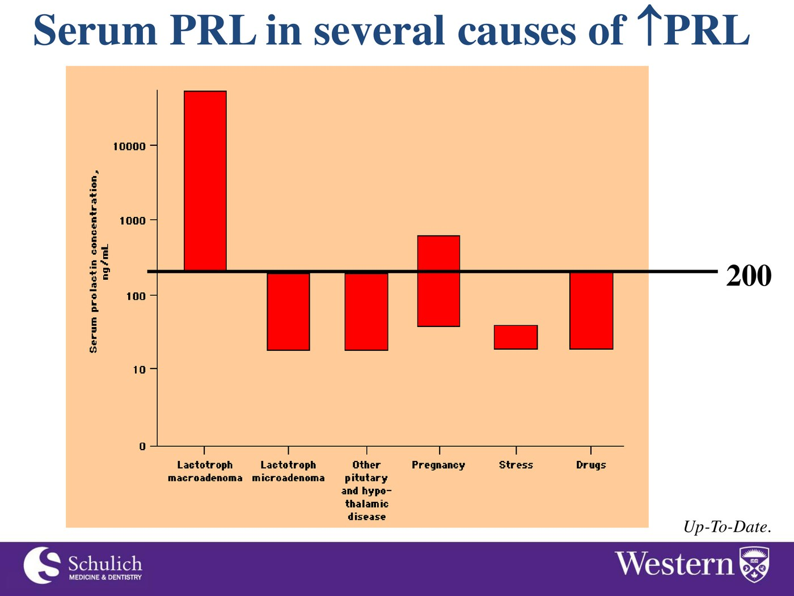
28-year-old woman, previously healthy
Irregular periods for 8 months, galactorrhea for 6 months occurring about 10× a month. Considering pregnancy.
Prolactin 140 µg/L (< 23) · LH 1 IU/L (1–6) · FSH 1.7 IU/L (1–8) · Estradiol 34 pmol/L (120–650).
Reading it: prolactin above 100 predicts overt hypogonadism, and that is exactly what the other three numbers show — a frankly low estradiol with LH and FSH sitting at the bottom of their ranges rather than rising to compensate. Secondary hypogonadism, driven by the prolactin.
What to order: prolactin, LH and FSH, and the sex steroid (estradiol or testosterone) — plus a TSH and a pregnancy test to exclude the two commonest non-tumour causes, and a medication review for dopamine antagonists.
Treatment: Medicine Before Surgery
Rationale for treating at all:
- Existing or impending neurologic symptoms due to the adenoma.
- Hypogonadism or other symptoms due to the raised prolactin.
| Option | Detail |
|---|---|
| Medical — dopamine agonists usually the first choice of therapy |
Cabergoline (Dostinex) · bromocriptine (Parlodel) · quinagolide (Norprolac) |
| Surgery | Removal of the hormone-producing tissue — reserved for failure of, or intolerance to, medical therapy |
The prolactinoma is the exception among pituitary tumours. For a growth-hormone or ACTH-secreting adenoma, surgery is the primary treatment. For a prolactinoma, a dopamine agonist is first-line — including for macroadenomas.
The reason is the physiology at the top of this part. Dopamine is the natural brake on the lactotroph, so a dopamine agonist is not merely suppressing a hormone: it acts on a receptor the tumour cells still express, and it shrinks the tumour as well as normalising the prolactin. Visual fields recover on tablets. No other pituitary tumour has a drug that does that.
Cabergoline works somewhat better than bromocriptine — more effective at normalising prolactin, better tolerated, and dosed twice weekly rather than daily.
Too Much — Growth Hormone
A clinical syndrome caused by persistent growth hormone hypersecretion, usually from a pituitary adenoma. The average patient waits 12 years for the diagnosis.
Acromegaly: Recognising It
Recall the axis: GHRH stimulates and somatostatin inhibits GH; GH acts largely through IGF-1 produced in the liver, which mediates growth and repair. Because GH is secreted in pulses and IGF-1 is stable in the circulation, IGF-1 is the measurable index of GH exposure — the fact the whole diagnostic pathway is built on.
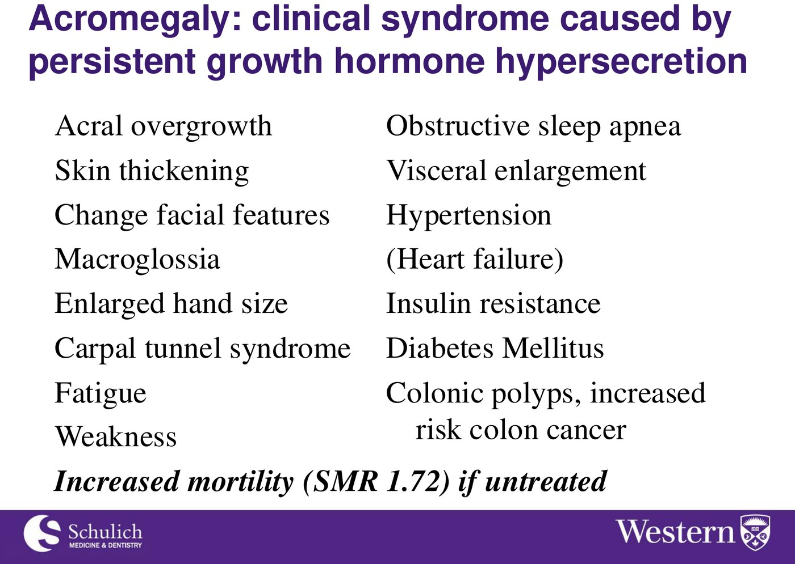
34-year-old industrial technician — referred because his GP noticed large hands
Past history: asthma since childhood; hypertension and type 2 diabetes, both newly diagnosed a few months ago.
He volunteered almost nothing. He lives alone and rarely reflects on his own appearance, and was unaware of any change until the large hands were pointed out.
On asking: reviewing old photographs, a dramatic change in appearance. Hands extremely large; work gloves now very tight. Shoe size 11 in 2000, now size 14 and tight. Increased hair growth on back and shoulders, oily sweaty skin, prominent forehead, large gaps appearing between the teeth, prominent large jaw. Skin tags under the arms, deepening voice, new snoring, increasing shortness of breath. Progressively severe right-sided headaches, worse on waking. Glucose 19 in the lab, home readings 14–20 despite metformin; polydipsia and weight loss from 290 to 264 lb. No visual change, no galactorrhea.
Examination: dramatically oversized hands and feet, BP 140/90, HR 90, BMI over 30. Frontal bossing, large gaps between the teeth, large jaw. Visual fields intact, cardiovascular exam normal, mild scattered wheeze, diaphoresis and oily skin, and a positive Tinel's sign at the right wrist.
The lecture's own note: mean delay between first symptoms and diagnosis is 12 years. This patient is the reason. The changes are slow, and the person experiencing them is the least able to see them — he lives alone, does not study his own face, and had no idea anything had changed until someone else said so.
Two things break the deadlock. Old photographs — asking the patient to compare themselves across a decade is a diagnostic manoeuvre, not small talk. And objects with sizes: gloves, rings, shoes and hats change measurably and the patient remembers the numbers. Shoe size 11 to 14 is far harder to dismiss than "my face looks different."
Note also the framing question the lecture puts after this case: what about the diabetes and hypertension that were recently diagnosed? They are not incidental comorbidities — they are complications of the acromegaly, and they date its onset.
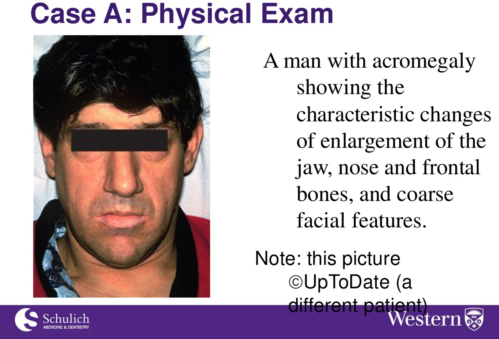
The face: enlargement of the jaw, nose and frontal bones with coarse features. A different patient, ©UpToDate.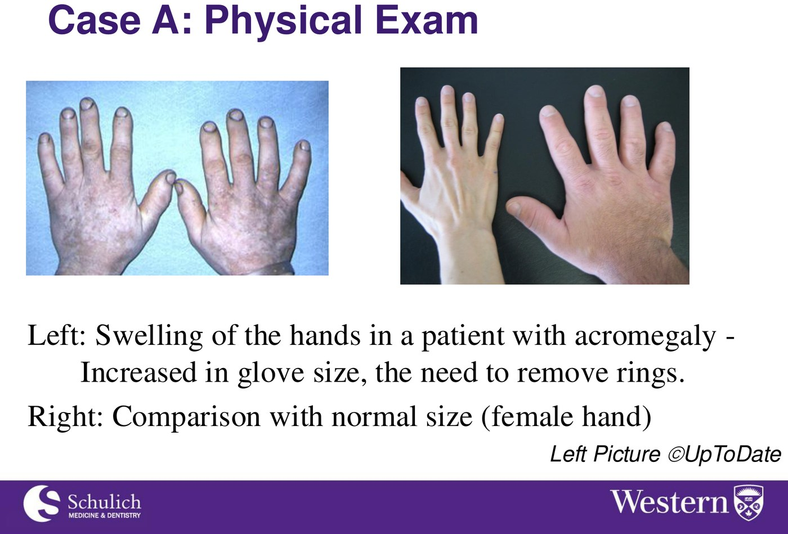
The hands: increased glove size and the need to remove rings, against a normal hand for scale. Left picture ©UpToDate.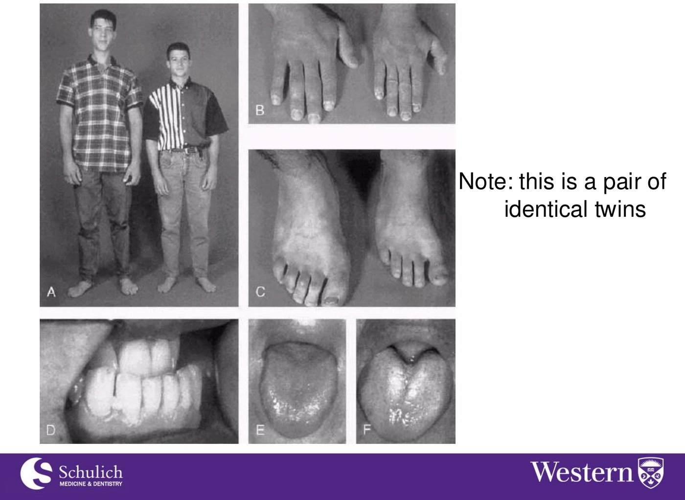
Identical twins — one affected, one not. The cleanest possible demonstration that these are acquired changes, not constitution: same genome, different hands, feet and tongue.Diagnosis, Complications and Treatment
| Step | Test | What it asks |
|---|---|---|
| 1 — Screening in patients with symptoms or risk factors | IGF-1 | Is total GH exposure raised? Age- and sex-dependent reference ranges. Note the cost to the patient |
| 2 — Confirmation | Oral glucose tolerance test — 75 g glucose, then GH every 30 minutes for 2 hours | Is there normal suppression of GH? Normally glucose suppresses GH to < 1 µg/L |
| 3 — Localisation | MRI pituitary | Where is the adenoma, and how big? |
A random GH is close to useless because secretion is pulsatile — a high value may be a normal pulse, a low value may be a trough. So the confirmatory test does not measure GH, it measures whether GH still obeys.
In a normal person a glucose load suppresses GH to below 1 µg/L. A GH-secreting adenoma is autonomous and does not suppress. This is the same logic as dexamethasone in Cushing and saline in hyperaldosteronism: apply the physiological off-switch and see whether anything switches off.
In this patient: IGF-1 > 1600 µg/L against a range of 115–307. GH 93.3 µg/L against 0.02–1.70. After glucose, GH fell only to 74 µg/L — against a normal of under 1. No suppression at all.
Cardiovascular risk and complications
| Complication | Frequency |
|---|---|
| Hypertension | 43% |
| Left ventricular hypertrophy · cardiomyopathy | — |
| Heart failure | 3–10% |
| Diabetes mellitus | 10–15% |
| Impaired glucose tolerance | A further 50% |
| Arthropathy | Common — and disabling |
Growth hormone is a counter-regulatory hormone that opposes insulin, which is why roughly two-thirds of patients have abnormal glucose handling once impaired tolerance is counted alongside frank diabetes. Our patient's "new" diabetes and hypertension were the disease announcing itself years before anyone looked at his hands.
Treatment
Goal: control tumour growth and IGF-1/GH levels.
- Transsphenoidal surgery — the primary treatment, unlike in prolactinoma.
- Medical therapy: somatostatin analogues (suppress GH production — using the axis's own inhibitory signal), and pegvisomant, a growth hormone receptor antagonist that blocks the hormone's action at the target instead of its release.
- Radiotherapy.
Every Screening Test on This Page, in One Table
| Axis | Suspected deficiency — screen with | Suspected excess — screen with |
|---|---|---|
| Adrenal (ACTH/cortisol) | 8–9 AM serum cortisol (< 100 confirms, > 450 excludes); stimulation test if in between | 24 h urine cortisol · 1 mg overnight dexamethasone · late-night salivary/plasma cortisol — then ACTH for the cause |
| Thyroid (TSH) | Free T4 — not TSH, which is unreliable in secondary disease | TSH with free T4 and free T3 (TSH-oma: TSH high-normal or raised with high free hormones) |
| Gonadal (LH/FSH) | LH, FSH and the sex steroid together — low steroid with unraised gonadotrophins | — |
| Growth hormone | IGF-1; stimulation with insulin tolerance test or glucagon | IGF-1, then oral glucose tolerance test (GH should suppress < 1 µg/L) |
| Prolactin | Rarely clinically relevant; no stimulation test required | Serum prolactin — with TSH and a pregnancy test to exclude the common non-tumour causes |
| Posterior (AVP) | Assessed separately — diabetes insipidus / AVP deficiency | — |
The pattern worth carrying: for deficiency you measure the target organ hormone, because the trophic hormone will lie to you. For excess you measure the hormone and then try to suppress it — dexamethasone for cortisol, glucose for GH — because autonomy, not concentration, is what defines the disease.
Built from Dr. Stan Van Uum's pituitary lecture (2024), delivered across four decks — Pituitary Hormone Insufficiency, and Pituitary Overproduction on Cushing, prolactin and growth hormone. All figures, case data, laboratory values and tables are taken from those slides, with their original citations kept in the captions (Clemens and van Uum, Can Fam Physician 2011; Nieman, Handbook of Diagnostic Endocrinology; acromegaly clinical photographs ©UpToDate). Added from outside the deck and flagged where it appears: the definitions of amenorrhea and oligomenorrhea; the mechanism by which levothyroxine given before glucocorticoid can precipitate an adrenal crisis; why dopamine agonists shrink prolactinomas rather than only suppressing prolactin; and why stalk section raises prolactin while lowering every other pituitary hormone. Cushing syndrome itself — presentation, likelihood ratios, and the ACTH-dependent versus independent split — is covered in 3.1, the adrenal gland, and is not repeated here. The HPG axis is covered in 2.6.